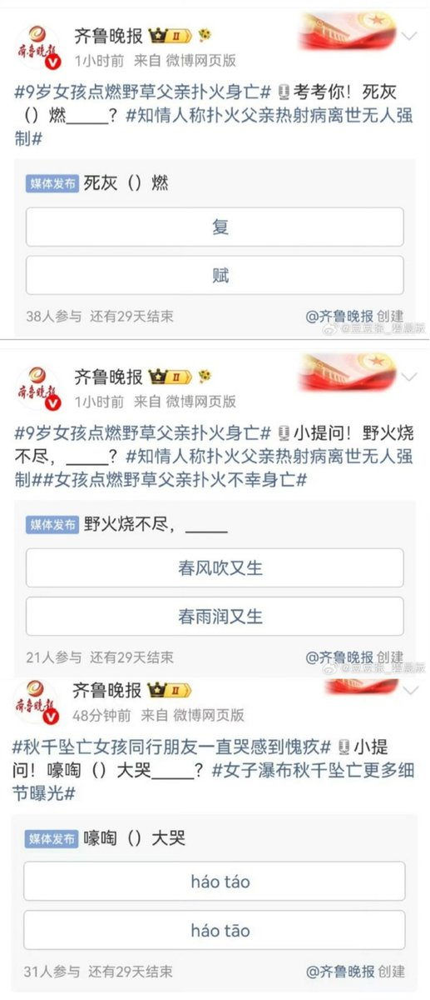
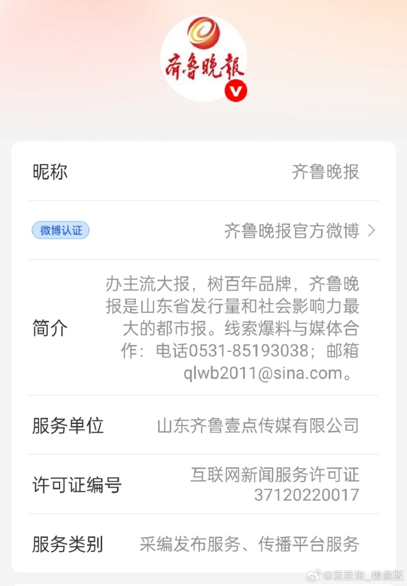

小橘春定（求愛性孤独）
@tatibana_sada
辩证法的胜利


李老师不是你老师
@whyyoutouzhele
“官媒微博玩地狱梗被批冷血”
6月21日父亲节当天，在“9岁女孩点燃野草、父亲扑火身亡”的新闻话题下
中共山东省委机关报社旗下省级都市报《齐鲁晚报》在其官方微博连续发起投票互动：
“考考你，死灰（父）燃”
“野火烧不尽，_________? ”
而在“秋干坠亡女孩”的新闻下，齐鲁晚报又发起猜读音互动。 https://t.co/YFB5Qf1kK2